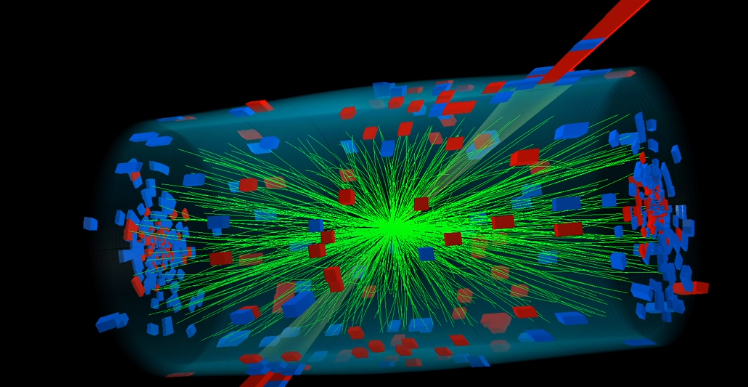

– link: Beyond Higgs: The Wild Frontier of Particle Physics - YouTube - Brave
What are these people looking for?
- Supersymmetry
- Mathematical idea: Not still experimentally verified.
- Pencil standing on it’s tip Analogy: Though people found the Higgs out there, there is still no understanding of how the higgs is standing in the standard model. Physicists are looking for the support for the pencil if it is being held by a string or being held by hand. They are looking for hand and the string now. Supersymmetry is supposed to be one of them.
Zoo of Particles
- Complications: Photons vs g, h , w particles which have 3 degree of spin meaning they are so slow as you can catch up with them and they have mass. Photons on the other hand have 2 degree of spin: either coming towards you or going in the opposite direction and you can’t observe a photon’s mass.
- Higgs Field: The space is filled with Higgs Boson which basically gives mass to all particles with mass. Photons fairly pass through the field without interacting with it: so no inertia and no mass. Other particles interact with the Higgs field as it slams them every instant and thus these particles can’t accelerate as the photon.
- There are basically two type of particles: One that you are made of and one that gives rise to the force.
- One you are made of are called fermions.
- Dirac found what are now called antimatter. He even didn’t believe it first that these particles would exist. They were confirmed in later experiments shortly.
New Accelerators:
ID: baf005d8-9b3d-44e0-ae60-15d2d36e4c66
- Linear machines: Proton Proton collision results in a lot of unnecessary stuff in analysis of a collision: so there can be better collision course. A positron electron collision on the other hand would be fairly simple with no unnecessary data: so ease of analysis and finding new particles.

As we can see in this picture, green is all track of particles that is unnecessary here for analysis. There may be two or three particles which are of care but the rectangular patches on the surface shows there are many more coming out. Now, physicists have to dig through this data to actually have a new particle discovered or it’s nature understood.- But to get to higher energy colliders, proton-proton collision is a must. So, there is a proposal of a 100km collider superior to LHC to find put things like Higgs under more microscopic view to figure out if they are pointlike or made of some other materials.
Was Higgs always there ?
- Theoretical formulations and with mass of Higgs; Higgs was not always there at the beginning of universe. In some point of time, Higgs turned it on. Higgs then permeated the space time.
- Also they are suggesting, Higgs will go through another shift. Higgs will be accelerating at the speed of light and the universe that exists today will transform itself into a new one.